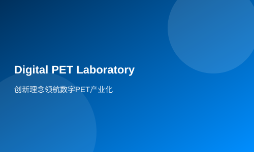

创新理念领航数字PET产业化
医疗器械创新在中国
“探测无形的射线，把它变成PET图像、变成辐射数据；产业化无形的知识和技术，让它真正为社会服务。‘形其未见，成其未来’（Visualize the invisible），是数字PET团队十余年来一直在坚持的事情，支撑着PET实验室，也凝聚着像瑞派宁这样的创新企业，它是我们产学研之路的方向，更是整个团队坚持的理念。”武汉光电国家实验室（筹）研究员、华中科技大学教授谢庆国告诉科技日报记者。日前，由华中科技大学牵头申报的项目“超高分辨率PET的开发和应用”国家重大科学仪器设备开发专项获得批准并进入启动阶段，由合作单位苏州瑞派宁科技有限公司承担产业化任务，保证本项目所研制的用于临床科学研究的大型PET样机和用于基础科学研究的小型PET样机可迅速转化成产品，投入市场。这标志着“数字PET”产业化步伐将大幅加快，让拥有自主知识产权的数字PET服务社会指日可待。
技术将无形射线变成有形
精密的PET仪器内部是最庞大复杂的系统，但其最初的信号只源于一对由正负电子湮灭而产生的伽马光子。在微观世界里，它们的速度无与伦比，是如此不可捉摸，以至于无数的科学家为捕捉其踪迹而穷思竭虑，倾其所能。而PET实验室，走出了一条不同寻常的路。高能伽马射线，通过一系列光电转化所产生高速电脉冲，原来并非杂乱无章的，经过实验室多年研究，终于发现了隐藏其后的规律，基于波形先验信息的MVT（多电压阈值）方法由此诞生。谢庆国说，“这是一次原理和方法上的创新，是发掘了不可见的自然规律，从而产生的崭新知识，造就了PET实验室之后一系列技术创新的基石。”
“形其未见，成其未来”具有两层含义，其一是PET技术可以将看不见的辐射射线在探测器下可见，从而将人身体内的疾病转化为可见的情形。而深层的意思是，在科学最前沿探索未知的领域，转化成服务社会的知识、技术和产品，筑造人类的未来。以MVT为基础，通过全新电子学系统设计和模块化探测器的研发，新知识转化成了新技术，通过全新图像重建方法的研究和系统集成，最终研发出世界上首台全数字PET－Trans-PET，新知识转化成了新仪器。
通过新仪器发现新知识
产业化，成为了数字PET仪器的必由之路。对于PET仪器走向成熟这个过程，企业合作伙伴苏州瑞派宁科技有限公司功不可没。谢庆国说，由于企业更懂得市场需求，从而可以指引仪器研究对准实用方向，比如适应性功能的开发，变结构PET等，使得研发出来的仪器马上能最大限度在应用领域发挥作用；企业具有更严格的工程标准可以加速研究成果产品化，使实验室研制的样机也具有成熟产品一样的稳定性能，马上就可以达到应用单位的要求，迅速的产生实用价值。正是由于一系列转化的过程，全数字PET仪器，不仅真的可视化了不可见的射线，完成成像，通过产业化推广还将使得其应用价值得到发挥，新仪器又会发现新知识，由此开始一个良性的循环。
建“产学研用”示范中心
此次PET实验室获得国家重大仪器专项的支持，将在原有积累上寻求更大的技术突破。通过发展第二代数字PET探测器，追求更高的分辨率并实现高磁场兼容；同时发展与探测器的高性能相适应的变结构成像方法和数据分析方法，形成超高分辨的应用适应型数字PET设备。项目还将集合多模成像仪器，进行集成研究，并紧密联系应用单位，建立起“产学研用”一体化的PET应用示范中心。这样一个项目，使得各方资源得到了最大整合，其对数字PET产业化进程的推动作用不言而喻，甚至将围绕PET形成一个完整的产业链。
近期，在武汉光谷的主导下，一家依托于PET实验室数字PET技术，专门围绕临床PET而从事医学影像仪器相关产业的公司就正在积极筹备当中，预计数月之内就能正式注册成立，这展示了数字PET产业链布局中十分重要的一环——临床PET从研发到应用正在无缝接轨。